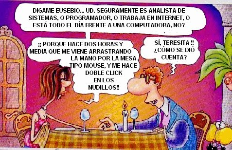
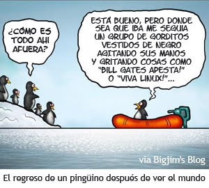
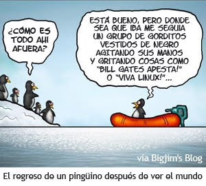

Humor Informático
En Vídeo
Viñetas
 

Si los Sistemas Operativos fueran líneas aéreas...
Air DOS: Todo el mundo empuja el avión hasta que planea, entonces, se suben de un salto y dejan que vaya con el impulso hasta que de nuevo llega al suelo. Entonces, empujan otra vez, saltan otra vez, etc..
Mac Airlines: Todas las azafatas, pilotos, encargados de equipaje y expendedores de billetes, parecen y actúan exactamente igual. Cada vez que uno pregunta sobre cosas concretas, se le dice amable, pero firmemente, que no necesita saberlo, que no quiere saberlo, y que todo se hará por su bien, sin que jamás tenga que saber el cómo y el por qué, así que mejor, calladito.
Windows Air: La terminal es bonita y colorida, con simpáticas azafatas, fáciles facturación de equipajes y embarque, y un despegue perfecto. Tras unos diez minutos en el aire, el avión explosina sin previo aviso.
Linux Air: Los empleados descontentos de todas las demás líneas aéreas, deciden abrir la suya propia. Construyen los aviones, los mostradores de billetes y pavimentan las pistas ellos mismos. Cobran una pequeña tarifa para cubrir el coste de imprimir el billete, pero también se puede descargar de Internet e imprimirlo uno mismo. Cuando uno embarca, recibe un asiento, cuatro pernos, una llave inglesa y una copia del Asiento-CÓMO.html. Una vez ajustado, el asiento, totalmente configurable, es muy cómodo, el avión sale y llega a su hora sin el menor problema, además, la comida durante el vuelo es maravillosa. Uno intenta contarles a los clientes de las otras líneas aéreas el estupendo viaje, pero todo lo que ellos alcanzan a decir es: "¿Que tuviste que hacer QUÉ con el asiento?"
Si pensabas que usar Linux era lo máximo y que eras muy chulo por usar un sistema distinto del resto, pues te equivocabas colega, usar Linux sí que tiene grandes desventajas como...
- En las reuniones matinales alrededor de la máquina de café, se habla de los últimos virus sufridos por todo el mundo, menos usted, que por ser usuario de Linux, se siente por ello marginado.
- La ausencia de estrés y de rabietas delante de su ordenador le están convirtiendo en una blanda, plácida y sebosa bola de grasa, mientras que sus compañeros se mantienen tensos y alertas todo el día, estallando en torbellinos irascibles a la menor ocasión. Usted envidia esa combatividad.
- Al no tener que recordar números de serie, claves, keywords, códigos de registro y períodos de evaluación, su memoria se está deteriorando seriamente. Sus compañeros, en cambio, recuerdan cientos de útiles y vitales códigos de registro, los cuales intercambian placenteramente, sin que usted pueda participar de su gozo.
- La falta de impactantes pantallazos azules están atrofiando el pigmento azul de su retina, por lo que su oculista le ha recomendado que mire fijamente durante varias horas al día al logotipo de IBM. Sus compañeros, en cambio, han hiperdesarrollado su pigmento azul y pueden, de hecho, ver en la oscuridad.
- En caso de una invasión de seres extraterrestres ultraviolentos (como sucede a menudo) , no podrá, tal como ocurre en “Independence Day”, instalar un virus en la nave principal de los invasores y de este modo destruir su civilización.
- Al ser usted usuario de Linux no tiene ninguna excusa para reiniciar su ordenador docenas de veces al día, y observa con envidia, cómo sus compañeros conversan en animada cháchara en los pasillos durante sus placenteros 'reboots', mientras usted se ve obligado -injustamente- a ser productivo todo el tiempo.
- El dinero que los demás emplean tan provechosamente en licencias, soportes, períodos de renovación y derechos de utilización, usted lo malgasta en ir al cine, en cenas, y en leer a Ray Bradbury, lo cual está deteriorando su salud enormemente.
- Al no ser usted usuario de Windows, ningún amigo le llamará para que emplee toda una tarde del fin de semana en formatear y reinstalar su ordenador. A usted no le queda más remedio que disfrutar ese tiempo con su familia paseando por el monte.